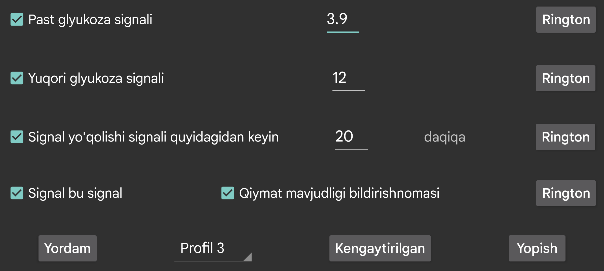

Bluetooth orqali olingan oqim qiymatlaridan past va yuqori glyukoza signallarini sozlash uchun foydalanish mumkin.
Signal shu qiymatda yoki undan past bo‘lganda ishga tushadi.
Signal shu qiymatda yoki undan yuqori bo‘lganda ishga tushadi.
Agar Bluetooth orqali glyukoza qiymati kelmasa, necha daqiqadan keyin signal berilishini ko‘rsating.
Signal quyidagi holatlardan biri bajarilganda to‘xtaydi:
Ba’zan sensor ishlamay qoladi. Bu yoqilgan bo‘lsa, sensor qayta ishlay boshlaganda sizga xabar beriladi. Biroq bu faqat qiymat yo‘qligini Juggluco ilovasining o‘zida ko‘rgan bo‘lsangiz ishlaydi. Agar qiymat yo‘qligini faqat Juggluco bildirishnomasi yoki soat siferblatidan bilgan bo‘lsangiz, “Qiymat qayta mavjud” bildirishnomasi yuborilmaydi.
Har bir signal uchun qaysi Qo‘ng‘iroq ohangi ijro etilishi va u qancha vaqt davom etishini belgilashingiz mumkin.
Agar “signal — signal” belgilansa, past, yuqori va signal yo‘qolishi uchun ijro etiladigan qo‘ng‘iroq ohangi Android’dagi Signallar tovush toifasidan foydalanadi. Bu shuni anglatadiki, uning ovozi Android sozlamalarida signallar ovozi bilan boshqariladi va telefon umumiy ovozi o‘chirilgan yoki vibratsiyaga o‘tkazilgan bo‘lsa ham jim bo‘lib qolmaydi. Agar bu belgi olinmasa, telefonlarda bildirishnoma ovozi ishlatiladi, Samsung Galaxy Watch 4–7 da esa tizim ovozi ishlatiladi. “Qiymat qayta mavjud” bildirishnomasi uchun doim shu usul qo‘llanadi.
Bu sozlamalar qaysi profil uchun ekanini ko‘rsating. Shunday qilib signallar va gapirish sozlamalari o‘rtasida almashish mumkin. Ma’lum vaqtda ma’lum profil avtomatik yoqilishi uchun Kengaytirilgan → Jadvallar bo‘limidan foydalaning.
Bu yerda juda past, juda yuqori, tez orada past, tez orada yuqori signallarini va profillarni ma’lum vaqtda avtomatik faollashtirishni sozlash mumkin.